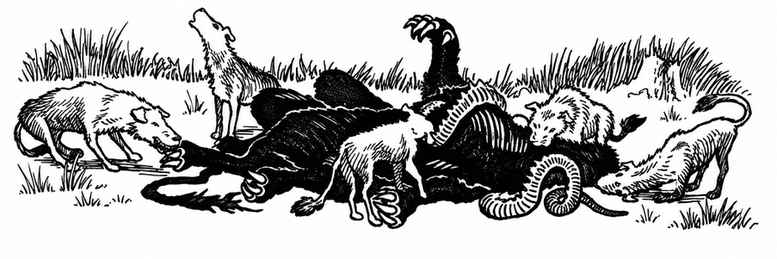

附录 M：召唤怪物 · Appendix M: Summoned Monsters

施放怪物召唤术时，查阅下表确定出现何种生物。每张表对应法术环级。若召唤者为邪恶阵营，可使用括号中的怪物替代。
怪物召唤 · I Monster Summoning I
| d% | 召唤怪物 |
|---|---|
| 01–10 | 恶魔：小魔 |
| 11–25 | 地精（矮人） |
| 26–40 | 大地精（精灵） |
| 41–55 | 狗头人（半身人） |
| 56–70 | 兽人（侏儒） |
| 71–00 | 巨鼠 |
怪物召唤 II Monster Summoning II
| d% | 召唤怪物 |
|---|---|
| 01–15 | 巨型蜈蚣 |
| 16–25 | 魔鬼： lemure |
| 26–45 | 豺狼人 |
| 46–60 | 吸血蝠 |
| 61–75 | 巨蟾蜍 |
| 76–00 | 蜥人 |
怪物召唤 III Monster Summoning III
| d% | 召唤怪物 |
|---|---|
| 01–07 | 钻地甲虫 |
| 08–17 | 熊地精 |
| 18–25 | 胶质立方体 |
| 26–32 | 食尸鬼 |
| 33–40 | 巨型蜥蜴 |
| 41–47 | 兽化人：狼人 |
| 48–57 | 赭色胶怪 |
| 58–67 | 食人魔 |
| 68–75 | 巨型蜘蛛：巨型 |
| 76–85 | 巨型蜘蛛：大型（原表重复类别） |
| 86–95 | 巨型蜱虫 |
| 96–00 | 巨鼬 |
怪物召唤 IV Monster Summoning IV
| d% | 召唤怪物 |
|---|---|
| 01–07 | 食肉猿 |
| 08–15 | 石像鬼（眨眼犬） |
| 16–25 | 鬼魂 |
| 26–35 | 灰色胶怪 |
| 36–42 | 地狱犬 |
| 43–50 | 五头蛇 |
| 51–58 | 兽化人：狼人 |
| 59–67 | 枭熊 |
| 68–76 | 影怪 |
| 77–86 | 巨蛇：蟒蛇 |
| 87–93 | 冰蟾蜍 |
| 94–00 | 毒蟾蜍 |
怪物召唤 V Monster Summoning V
| d% | 召唤怪物 |
|---|---|
| 01–07 | 鸡蛇 |
| 08–17 | 移位兽 |
| 18–26 | 变形怪 |
| 27–36 | 七头蛇 |
| 37–45 | 莱欧克洛塔 |
| 46–55 | 地底蜥蜴 |
| 56–63 | 兽化人：野猪人 |
| 64–72 | 牛头怪 |
| 73–78 | 巨蛇：双头蛇 |
| 79–85 | 巨蛇：毒蛇 |
| 86–90 | 巨蛇：喷吐蛇 |
| 91–00 | 巨型蜘蛛 |
怪物召唤 VI Monster Summoning VI
| d% | 召唤怪物 |
|---|---|
| 01–06 | 腐食爬虫 |
| 07–12 | 魔鬼：艾琳耶斯 |
| 13–19 | 八头蛇 |
| 20–26 | 豺狼人（拉玛苏） |
| 27–31 | 兽化人：虎人（熊人） |
| 32–38 | 蝎狮 |
| 39–43 | 食人魔法师 |
| 44–51 | 奥格 |
| 52–56 | 罗刹 |
| 57–63 | 火蜥蜴 |
| 64–68 | 巨型蜘蛛：相位型 |
| 69–78 | 巨魔 |
| 79–84 | 尸妖 |
| 85–88 | 风行者 |
| 89–92 | 怨魂 |
| 93–00 | 飞龙 |
怪物召唤 VII Monster Summoning VII
| d% | 召唤怪物 |
|---|---|
| 01–03 | 奇美拉（库奥托亚） |
| 04–06 | 恶魔：魅魔 |
| 07–09 | 恶魔：I 型 |
| 10–12 | 恶魔：II 型 |
| 13–15 | 恶魔：III 型 |
| 16–18 | 魔鬼：倒刺魔 |
| 19–21 | 魔鬼：骨魔 |
| 22–23 | 魔鬼：角魔 |
| 24–26 | 双头巨人 |
| 27–29 | 火巨人 |
| 30–32 | 冰霜巨人 |
| 33–35 | 丘陵巨人 |
| 36–38 | 石巨人 |
| 39–41 | 石化蜥蜴 |
| 42–43 | 哀嚎女妖 |
| 44–46 | 十头蛇 |
| 47–49 | 火焰蛇：八头 |
| 50–52 | 食脑怪 |
| 53–55 | 隐形猎手 |
| 56–58 | 拉弥亚 |
| 59–61 | 火蜥蜴 |
| 62–64 | 灵吸怪 |
| 65–67 | 木乃伊 |
| 68–70 | 灵体那伽 |
| 71–73 | 新奥格 |
| 74–76 | 夜魔婆 |
| 77–79 | 绳怪（谢杜） |
| 80–82 | 震颤怪 |
| 83–85 | 巨型蛞蝓 |
| 86–88 | 怨魂 |
| 89–91 | 斯芬克斯：鹰头狮身（人面狮身） |
| 92–94 | 眼魔 |
| 95–97 | 鬼火 |
| 98–00 | 索恩 |
请记住，地下城主可以自行决定召唤何种怪物及其数量。因此，即便一级召唤术召来的是老鼠，鉴于其相对弱小，也可以允许出现较大数量。自行选择的主要缺点是，玩家可能认为地下城主存在偏袒——无论有利还是不利。各表中的怪物显然有强有弱；通常最好让随机骰决定，不要让“神明”插手。
在水面或水下施放怪物召唤术时，使用以下表格确定出现的生物。淡水与咸水使用不同表格。
水生怪物召唤 · Aquatic Monster Summoning
| 法术环级 | 淡水 d% | 淡水生物 | 咸水 d% | 咸水生物 |
|---|---|---|---|---|
| I | 01–67 | 海精灵（大地精） | 01–50 | 海精灵（大地精） |
| I | 68–00 | 水精灵 | 51–00 | 人鱼 |
| II | 01–00 | 蜥人 | 01–33 | 伊克萨奇特尔 |
| II | — | — | 34–00 | 洛卡萨 |
| III | 01–33 | 巨蟹 | 01–50 | 蕾西顿（食尸鬼） |
| III | 34–00 | 蕾西顿（食尸鬼） | 51–00 | 沙华鱼人 |
| IV | 01–33 | 巨型水甲虫 | 01–40 | 科波辛斯（石像鬼） |
| IV | 34–50 | 巨型螯虾 | 41–80 | 巨型龙虾 |
| IV | 51–67 | 科波辛斯（石像鬼） | 81–00 | 海精灵 |
| IV | 68–00 | 巨型水蜘蛛 | — | — |
| V | 01–80 | 巨型鳄鱼 | 01–50 | 巨型鳄鱼 |
| V | 81–00 | 水怪 | 51–70 | 海巫 |
| V | — | — | 71–90 | 海狮 |
| V | — | — | 91–00 | 水怪 |
| VI | 01–33 | 巨型章鱼 | 01–33 | 巨型章鱼 |
| VI | 34–00 | 巨型海蛇 | 34–00 | 巨型海蛇 |
| VII | 01–20 | 莫克斯 | 01–15 | 莫克斯 |
| VII | 21–00 | 水那伽 | 16–70 | 鳐鱼：蝠鲼 |
| VII | — | — | 71–00 | 巨型鱿鱼 |